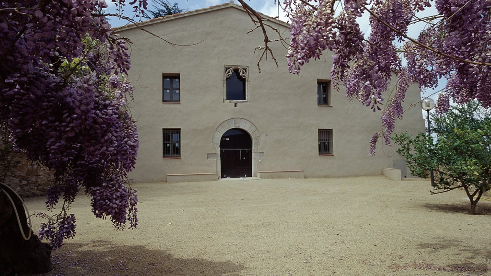

Home
FES WORKSHOP
November 2022
CAN BALASC - BARCELONA
Why, Where, When, What and How to compare ecosystem services
OVERVIEW
Most biosphere’s ecosystems provide goods and services that are key to human well-being. Referred as ecosystem Services (ES), their provisions vary depending on their geographical and biophysical context the anthropogenic management and the history of disturbances they have suffered. Ecosystem services have been frequently quantified as absolute physical magnitudes or as monetary values. These absolute values, however, may not always be the best approximation for comparing ES provided by different ecosystems or under different historical or socio-ecological contexts. For instance, woodlands located in very arid areas may show lower annual carbon sequestration rates than forests in more humid areas, although the former may be closer to their maximum sequestration capacity than the latter. Therefore, higher absolute values do not necessarily mean that a specific ecosystem is more valuable in context-dependent terms. For this reason, it is key to consider historical (e.g., ES provision evolution), ecological, geographical (e.g., ES provision by spatially related ecosystems) and social (e.g., society ES demand) contexts for an adequate comparison between ES.
This workshop aims to identify when context dependency is relevant to measure ES and the different types of contexts (i.e., geographic -e.g., spatial scale-, temporal, social -e.g., society impact and demand-, etc.) that exist for comparing ES. With the goal of simplifying the discussions about the topic, we will use forest ecosystem services (FES) as a case of study.
QUESTIONS
WHY
WHERE
WHEN
WHAT
HOW
LIST OF ATTENDEES
Workshop Participants:
Jordi Martinez-Vilalta (MM), CREAF/UAB, Spain
Francisco Lloret (FLL), CREAF/UAB, Spain
Josep M. Espelta (JE), CREAF, Spain
Javier Retana (JR), CREAF/UAB, Spain
Organising committee:
Jose V. Roces-Diaz (JR), UNIOVI
Judit Lecina (JL), TUM
Maria Angeles Perez-Navarro (MAPN), KCL
Luciana Jaime (LJ), CREAF
Albert Vila (AV), CREAF/Univ Sirling
Victor Flo (VF), ICL/UAB
FACILITIES
Can Balasc Biological Station

Biological station near Barcelona. Located in the Serra de Collserola Natural
Park, one of the metropolitan area of Barcelona’s largest and best
preserved forest areas, Can Balasc has laboratories and greenhouses, a
guest house with rooms for visiting researchers, and 100 ha of forests
and experimental sites for research purposes. It is ideal for evaluating
the effects of global change on Mediterranean metropolitan ecosystems,
which provide essential ecosystem services and are especially affected
by drivers of global change (land use changes, wildfires and invasive
species). Several field experiments that have been running for more than
15 years and are part of the Spanish and European Long Term Ecological
Research Networks (LTER-Spain and LTER-Europe) have been taking place at
Can Balasc since 2012.
FES workshop organising committee
FES@creaf.uab.cat